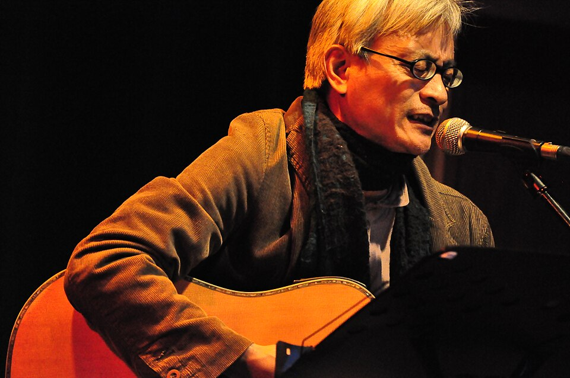

← 回總行程
鐵花新聚落
Day 1 ・ 11/14(六) ・ 預計 約 19:20 ・ 停留 90 分(晚餐加逛逛)

圖片參考:Wikimedia Commons ・ Homima ・ CC BY-SA 4.0 ・ 來源 (示意圖:鐵花村現場演出)
台東市區的音樂與文創聚落,由舊鐵道倉庫一帶改造而成,有慢市集、小吃和現場音樂。騎了一天車,晚上走過去逛逛、吃晚餐很剛好。
遊玩重點
建議店家與預估費用
- 鐵花村慢市集小吃攤:晚餐加點心(約 NT$150~300)
- 現場音樂表演:是否收費請確認(多為免費或自由欣賞)
本站預估:約 NT$150~300 / 人
店家與費用是依一般行情推估,不是即時報價。出發前請用 Google 地圖確認營業時間與價格。
騎士小提醒
- 是否有表演、市集的營業日與時間,請出發前再確認。
- 離住宿的距離與步行或騎車方式,等飯店地址補上後再確認。
- 晚上不要喝酒,隔天還要騎蘇花。